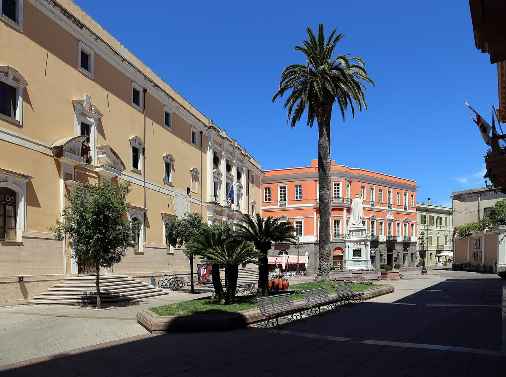

이탈리아 오리스타노, 재생에너지공동체 준비하지만 참여는 아직 저조

사전 가입 약 30건, 설명회 참석 9명…3MW 넘는 지붕 태양광 구상
이탈리아 사르데냐섬 오리스타노 시가 도(Provincia)·산업단지 컨소시엄과 함께 시민과 기업이 참여하는 재생에너지공동체(CER)를 준비하고 있지만 참여는 아직 저조하다. 6월 9일 이후 사전 가입은 약 30건이고, 5일 아침 설명회에는 9명만 참석했다. 기업 대상 두 번째 설명회는 참석이 적어 취소됐다. 시는 학교·공공건물·창고 지붕에 3MW 넘게 설치할 수 있다고 보며, 시 전력 소비의 약 70%는 시를 담당하는 변전소 세 곳 중 한 곳에 연결돼 있다. 가입자는 패널을 따로 달거나 공급사를 바꿀 필요가 없고, 같은 변전소에 연결된 가입자끼리 시간 단위로 전기를 나누면 에너지서비스공사(GSE)가 나눈 전기량에 장려금을 준다. 시 담당 위원 파올로 안지오이는 가입 신청 수를 본 뒤 발전 설비 규모를 정하겠다는 입장이다.
시민에너지 관점
사전 가입 약 30건에 설명회 참석 9명이라는 숫자는 제도와 지붕이 있어도 주민이 모이지 않으면 공동체가 시작되지 않는다는 점을 보여 준다. 가입자가 패널을 달지 않아도 되고 공급사를 바꾸지 않아도 된다는 구조가 아직 시민에게 와닿지 않았다는 뜻일 수 있다. 설비 규모가 가입 수에 따라 정해지는 만큼, 시민이 설계와 운영에 직접 참여하는 공동체여야 가입할 이유가 생긴다. 국내 지자체도 공모와 보조금에 앞서 주민이 참여 방식을 함께 정하는 자리를 만들고, 설명회 참석 인원 같은 참여 지표를 공개해야 한다.
출처: L'Unione Sarda 2026-11-06 Marianna Guarna 원문 보기
イタリア・オリスターノ、再生可能エネルギー共同体を準備するも参加はまだ低調
事前加入は約30件、説明会の参加は9人…3MW超の屋根太陽光を構想
イタリア・サルデーニャ島のオリスターノ市が、県（Provincia）・工業団地コンソーシアムとともに、市民と企業が参加する再生可能エネルギー共同体（CER）を準備しているが、参加はまだ低調だ。6月9日以降の事前加入は約30件で、5日朝の説明会に参加したのは9人だけだった。企業向けの2回目の説明会は参加者が少なく中止された。市は学校・公共建物・倉庫の屋根に3MW超を設置できるとみており、市の電力消費の約70%は、市を担当する3つの変電所のうち1つに接続されている。加入者はパネルを別に設置したり供給会社を変えたりする必要がなく、同じ変電所に接続された加入者同士が時間単位で電気を分け合うと、エネルギーサービス公社（GSE）が分け合った電力量に対してインセンティブを支給する。市担当委員のパオロ・アンジョイは、加入申請の数を見てから発電設備の規模を決める方針だ。
市民エネルギーの視点
事前加入約30件に説明会参加9人という数字は、制度と屋根があっても住民が集まらなければ共同体は始まらないことを示している。加入者がパネルを設置しなくてもよく、供給会社を変えなくてもよいという仕組みが、まだ市民に響いていないという意味かもしれない。設備規模が加入数に応じて決まる以上、市民が設計と運営に直接参加する共同体でなければ加入する理由が生まれない。国内の自治体も、公募や補助金に先立って住民が参加方法を一緒に決める場を設け、説明会の参加人数のような参加指標を公開すべきだ。
出典: L'Unione Sarda 2026-11-06 Marianna Guarna 原文を読む
意大利奥里斯塔诺筹备可再生能源社区，但参与仍然低迷
预先加入约30件，说明会到场9人…构想建设超过3MW的屋顶光伏
意大利撒丁岛的奥里斯塔诺市正与省（Provincia）和工业园区联合体一起，筹备由市民和企业参加的可再生能源社区（CER），但参与仍然低迷。自6月9日以来，预先加入约30件，5日上午的说明会只有9人到场。面向企业的第二场说明会因到场者少而取消。市政府认为，学校、公共建筑和仓库的屋顶可安装超过3MW，全市用电量约70%接入负责该市的三座变电站之一。加入者不必另装光伏板，也不必更换供电公司；接入同一变电站的加入者之间按小时共享电力，能源服务公司（GSE）会就共享的电量发放奖励金。市政委员保罗·安焦伊的立场是，看过加入申请数量后再确定发电设施规模。
市民能源视角
预先加入约30件、说明会到场9人这一数字表明，即使有制度和屋顶，居民不聚拢，社区也无从起步。加入者不必安装光伏板、不必更换供电公司这一结构，可能尚未触动市民。既然设施规模取决于加入数量，只有市民直接参与设计和运营的社区，才会让人有加入的理由。国内的地方政府也应在征集项目和发放补贴之前，搭建让居民共同商定参与方式的场合，并公开说明会到场人数之类的参与指标。
来源: L'Unione Sarda 2026-11-06 Marianna Guarna 查看原文
Oristano, Italy, Prepares a Renewable Energy Community, but Participation Remains Low
About 30 pre-registrations, 9 attendees at the briefing... rooftop solar of over 3MW envisioned
The city of Oristano on the Italian island of Sardinia is preparing a renewable energy community (CER) open to citizens and businesses together with the Province and an industrial-zone consortium, but participation remains low. Since June 9, pre-registrations number about 30, and only 9 people attended the briefing on the morning of the 5th. A second briefing for businesses was cancelled because of low attendance. The city believes more than 3MW can be installed on the roofs of schools, public buildings and warehouses, and about 70% of the city's electricity consumption is connected to one of the three substations serving the city. Members do not need to install panels separately or change suppliers; when members connected to the same substation share electricity hour by hour, the energy services operator (GSE) pays an incentive on the amount of electricity shared. The city councillor responsible, Paolo Angioi, says he will decide the size of the generation capacity after seeing the number of membership applications.
Citizen Energy View
The figures of about 30 pre-registrations and 9 briefing attendees show that even with a system and rooftops in place, a community cannot start unless residents gather. It may mean that the structure in which members need not install panels or change suppliers has not yet reached citizens. Because the capacity will be set according to the number of members, there is a reason to join only if the community is one in which citizens take part directly in design and operation. Local governments in Korea, too, should create venues where residents help decide how to participate before launching open calls and subsidies, and should disclose participation indicators such as the number of briefing attendees.
Source: L'Unione Sarda 2026-11-06 Marianna Guarna Read the original